Перейти на главную страницу справочника.
Пересчёт обмотки.
- На этой странице несколько формул из справочников для пересчета обмотки асинхронного электродвигателя.
Пересчёт обмотки трёхфазного асинхронного электродвигателя на другое напряжение.
- Число витков в пазу для нового напряжения питания. Nс - количество витков в пазу старой обмотки, Uс - напряжение питания старой обмотки, Uн - напряжение питания новой обмотки.
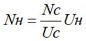
- Новое сечения провода. Nс - количество витков в пазу старой обмотки, Nн - количество витков в пазу новой обмотки, Sс - сечение провода старой обмотки (если двигатель намотан в два или более проводов, то общее сечение).
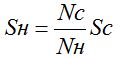
- При данном пересчёте обмотки трёхфазного асинхронного электродвигателя на другое напряжение не учитывается количество параллельных ветвей и соединение фаз обмотки в звезду или в треугольник, в итоге получается количество параллельных ветвей в новой обмотке равно количеству параллельных ветвей в старой обмотке и соединение фаз в новой обмотке равно соединению фаз в старой обмотке.
- Формулы можно использовать для пересчета на другое напряжение однофазных электродвигателей, а так же обмоток магнитных катушек и трансформаторов.
Пересчёт обмотки асинхронного электродвигателя на другую частоту питающей сети.
- Количество витков в пазу при новой частоте питающей сети. fc - частота сети старая, fн - частота сети новая, Nс - количество витков в пазу старой обмотки.
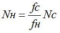
- Сечение провода. Nс - количество витков в пазу старой обмотки, Nн - количество витков в пазу новой обмотки, Sс - сечение провода старой обмотки (если двигатель намотан в два или более проводов, то общее сечение).
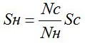
- Частота вращения ротора электродвигателя после пересчета обмотки. fн - частота сети новая, fc - частота сети старая, nс - частота вращения ротора электродвигателя старая.
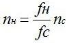
- Мощность электродвигателя при новой частоте питающей сети. fн - частота сети новая, fc - частота сети старая, Pс - мощность электродвигателя старая.
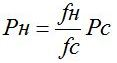
- При данном пересчёте обмотки трёхфазного асинхронного электродвигателя на другую частоту питающей сети не учитывается количество параллельных ветвей и соединение фаз обмотки в звезду или в треугольник, в итоге получается количество параллельных ветвей в новой обмотке равно количеству параллельных ветвей в старой обмотке и соединение фаз в новой обмотке равно соединению фаз в старой обмотке.
Пересчёт обмотки асинхронного электродвигателя на другую частоту вращения.
Перед пересчётом обмотки на другую частоту вращения нужно:
- Проверить магнитную взаимосвязь между статором и ротором для новой частоты вращения. Во всех формулах неравенство должно соблюдаться.

- Проверить максимально допустимые обороты сердечника статора Di - внутренний диаметр сердечника статора в см, h - высота спинки статора в см. Не рекомендуется выполнять обмотку 3000 оборотов на сердечнике с допустимыми оборотами от 1500 и меньше.

Пересчёт обмотки на другую частоту вращения.
- Новое число витков. nс - синхронное число оборотов старое, nн - синхронное число оборотов новое, Nс - количество витков в пазу старой обмотки.
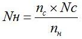
При расчёте числа витков по данной формуле, магнитная индукция в зубцах статора "Bz" остаётся такой же как у двигателя с заводской обмоткой. Увеличение количества витков от полученных по формуле влечёт за собой уменьшение магнитного насыщения зубцов статора, соответственно уменьшается мощность электродвигателя. Уменьшение количества витков от полученных по формуле влечёт за собой увеличение магнитного насыщения зубцов статора, возрастают магнитные нагрузки, пусковой момент и ток холостого хода, соответственно увеличивается нагрев электродвигателя. КПД двигателя ухудшается как при увеличении, так и при уменьшении числа витков от полученных по формуле. Если при проверке окажется, что магнитная индукция в спинке статора намного превышает допустимую величину, лучше отказаться от дальнейшего пересчёта обмотки.
- После расчёта числа витков в пазу, проверить величину магнитной индукции в спинке статора (формула для однослойных обмоток 380 вольт, а=1, соединение фаз Y)
Z1 - количество пазов статора, L - длина сердечника статора в см, h - высота спинки статора в см, N - число витков в пазу. Если магнитная индукция в спинке статора превысит величину указанную в таблицах, увеличить число витков в пазу.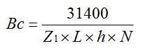
- Новое сечение провода. Nс - количество витков в пазу старой обмотки, Nн - количество витков в пазу новой обмотки, Sс - сечение провода старой обмотки (если двигатель намотан в два или более провода, то общее сечение).
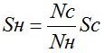
- Формула для расчёта максимального тока электродвигателя. S - сечение провода, j - плотность тока, выбирается в зависимости от мощности, оборотов и исполнения электродвигателя.
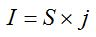
- Новое число полюсов. f - частота сети, nн - синхронное число оборотов новое.
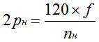
- Новая мощность. Pс - мощность электродвигателя старая, Sс - сечение провода старой обмотки, Sн - сечение провода новой обмотки.
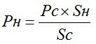
- При данном пересчёте обмотки трёхфазного асинхронного электродвигателя на другую частоту вращения не учитывается количество параллельных ветвей и соединение фаз обмотки в звезду или в треугольник, в итоге получается количество параллельных ветвей в новой обмотке равно количеству параллельных ветвей в старой обмотке и соединение фаз в новой обмотке равно соединению фаз в старой обмотке. Рекомендуется пересчитать обмотку в одну параллельную ветвь "а=1", 380 вольт и соединение фаз в звезду "Y", а потом уже выполнять пересчёт на другие обороты.
Пересчёт обмотки с алюминиевым проводом на медный.
- При пересчёте электродвигателя с обмоткой из алюминиевого провода на медный, для сохранения прежней мощности нужно сечение медного провода уменьшить в 1,63 раза. Число витков остаётся без изменения.
- При пересчёте электродвигателя с обмоткой из медного провода на алюминиевый, для сохранения прежней мощности нужно сечение алюминиевого провода увеличить в 1,63 раза. Число витков остаётся без изменения.
Пересчёт обмотки по длине сердечника статора.
- В единых сериях при одинаковых наружном и внутреннем диаметре статора и одинаковой частотой вращения, выпускаются электродвигатели с разной длиной сердечника. При известных обмоточных данных на двигатель с одной длиной сердечника статора можно рассчитать обмоточные данные двигателя с другой длиной сердечника этой же серии. Тип и шаг обмотки остаются без изменения.
- Число витков при другой длине статора. Nс - количество витков в пазу старой обмотки, Lс - старая длина сердечника статора в см, Lн - новая длина сердечника статора в см.
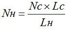
- Новое сечение провода. Nс - количество витков в пазу старой обмотки, Nн - количество витков в пазу новой обмотки, Sс - сечение провода старой обмотки (если двигатель намотан в два или более провода, то общее сечение).
- Максимальный ток новой обмотки. Iс - ток старой обмотки, Sс - сечение провода старой обмотки, Sн - сечение провода новой обмотки.
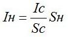
- Новая мощность. Pс - мощность электродвигателя старая, Sс - сечение провода старой обмотки, Sн - сечение провода новой обмотки.
28.03.2012 г.
Литература по данной теме:
Девотченко Ф.С. "Замена обмотки трёхфазных электродвигателей." 1991 г.
Жерве Г.К. "Как рассчитать обмотку статора асинхронного двигателя" 1960 г.
Кокорев А.С. "Справочник молодого обмотчика электрических машин" 1979 г.
Мещеряков В.В., Ченцов И.М. "Пересчет электрических машин и таблицы обмоточных данных" 1950 г.